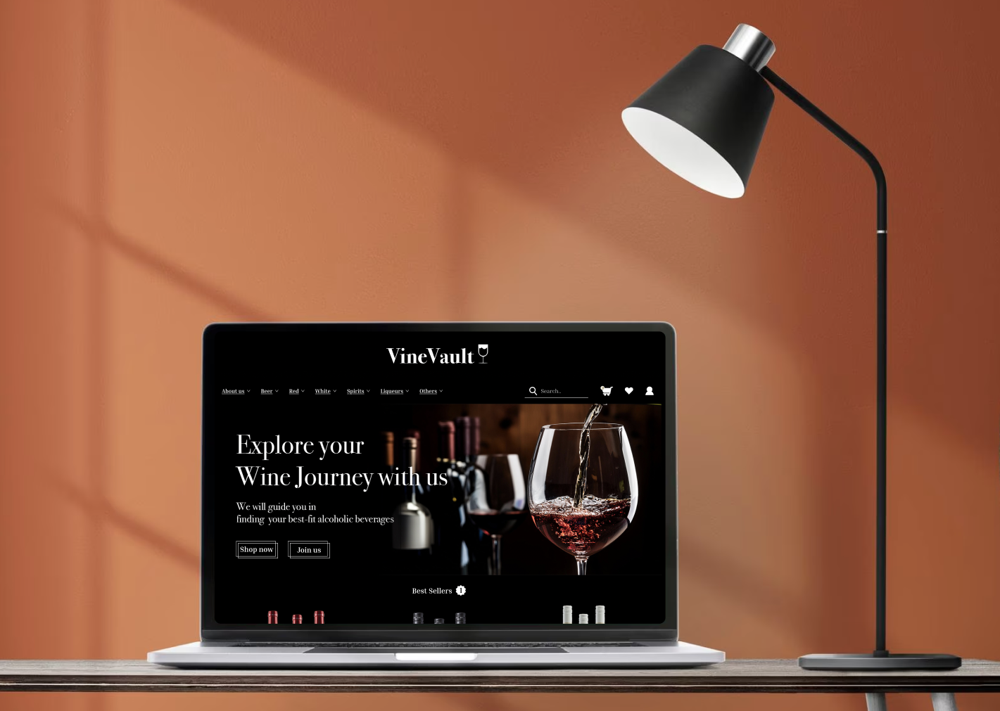

E-commerce Website - VineVault
Alcoholic beverages are popular among urbanites. People often enjoys parties and drinks after long and busy working week. With the wide variety of alcoholic products in the market, it might be overwhelming for busy urbanites to find their best-fit alcoholic beverages and make purchases from physical stores.
VineVault is a e-commerce website which aims at facilitating wine-purchasing experience. Customers can easily search and purchase wines with well-defined categories and different tags which enhances the effectiveness in making purchases.
More about VineVault